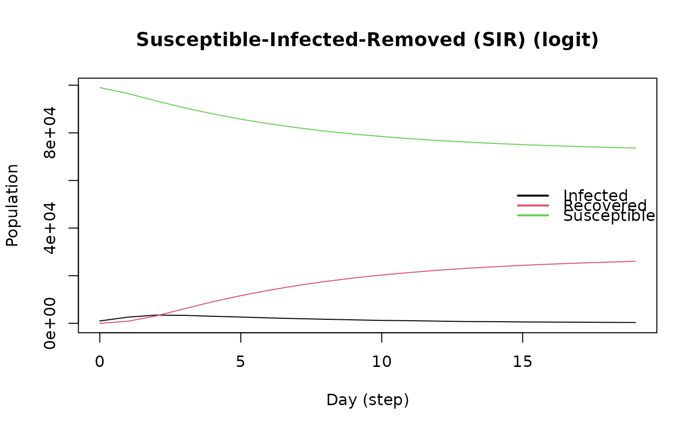

SIR Logistic model
Usage
ModelSIRLogit(
vname,
data,
coefs_infect,
coefs_recover,
coef_infect_cols,
coef_recover_cols,
prob_infection,
recovery_rate,
prevalence
)Arguments
- vname
Name of the virus.
- data
A numeric matrix with
nrows.- coefs_infect
Numeric vector. Coefficients associated to infect.
- coefs_recover
Numeric vector. Coefficients associated to recover.
- coef_infect_cols
Integer vector. Columns in the coeficient.
- coef_recover_cols
Integer vector. Columns in the coeficient.
- prob_infection
Numeric scalar. Baseline probability of infection.
- recovery_rate
Numeric scalar. Baseline probability of recovery.
- prevalence
Numeric scalar. Prevalence (initial state) in proportion.
Value
The
ModelSIRLogitfunction returns a model of class epiworld_model.
See also
Other Models:
ModelDiffNet(),
ModelSEIRCONN(),
ModelSEIRDCONN(),
ModelSEIR(),
ModelSIRCONN(),
ModelSIRD(),
ModelSIR(),
ModelSISD(),
ModelSIS(),
ModelSURVD(),
ModelSURV(),
epiworld-data
Examples
set.seed(2223)
n <- 100000
# Creating the data to use for the "ModelSIRLogit" function. It contains
# information on the sex of each agent and will be used to determine
# differences in disease progression between males and females. Note that
# the number of rows in these data are identical to n (100000).
X <- cbind(
Intercept = 1,
Female = sample.int(2, n, replace = TRUE) - 1
)
# Declare coefficients for each sex regarding transmission_rate and recovery.
coef_infect <- c(.1, -2, 2)
coef_recover <- rnorm(2)
# Feed all above information into the "ModelSIRLogit" function.
model_logit <- ModelSIRLogit(
"covid2",
data = X,
coefs_infect = coef_infect,
coefs_recover = coef_recover,
coef_infect_cols = 1L:ncol(X),
coef_recover_cols = 1L:ncol(X),
prob_infection = .8,
recovery_rate = .3,
prevalence = .01
)
agents_smallworld(model_logit, n, 8, FALSE, .01)
run(model_logit, 50)
#> _________________________________________________________________________
#> |Running the model...
#> |||||||||||||||||||||||||||||||||||||||||||||||||||||||||||||||||||||||| done.
#> | done.
plot(model_logit)

# Females are supposed to be more likely to become infected.
rn <- get_reproductive_number(model_logit)
# Probability of infection for males and females.
(table(
X[, "Female"],
(1:n %in% rn$source)
) |> prop.table())[,2]
#> 0 1
#> 0.12984 0.14201
# Looking into the individual agents.
get_agents(model_logit)
#> Agents from the model "Susceptible-Infected-Removed (SIR) (logit)":
#> Agent: 0, state: Recovered (2), Nvirus: 0, NTools: 0, NNeigh: 8
#> Agent: 1, state: Recovered (2), Nvirus: 0, NTools: 0, NNeigh: 8
#> Agent: 2, state: Recovered (2), Nvirus: 0, NTools: 0, NNeigh: 8
#> Agent: 3, state: Recovered (2), Nvirus: 0, NTools: 0, NNeigh: 8
#> Agent: 4, state: Recovered (2), Nvirus: 0, NTools: 0, NNeigh: 8
#> Agent: 5, state: Recovered (2), Nvirus: 0, NTools: 0, NNeigh: 8
#> Agent: 6, state: Recovered (2), Nvirus: 0, NTools: 0, NNeigh: 8
#> Agent: 7, state: Recovered (2), Nvirus: 0, NTools: 0, NNeigh: 8
#> Agent: 8, state: Susceptible (0), Nvirus: 0, NTools: 0, NNeigh: 8
#> Agent: 9, state: Recovered (2), Nvirus: 0, NTools: 0, NNeigh: 8
#> ... 99990 more agents ...